OBJEKTIF
- Mengurangkan 7 Kerugian
- Meningkatkan Produktiviti
- Menjadikan Persekitaran Kerja Lebih Selamat
- Meningkatkan Pencapaian Syarikat
MATLAMAT
- Melakukan pemeriksaan secara berterusan pada peralatan pelinciran untuk mengenalpasti sebarang keadaan abnormal pada peralatan
- Meningkatkan pengetahuan team member mengenai peralatan pelinciran dengan pembelajaran yang berterusan
Kebaikan Pelinciran
- Mengurangkan kesan hakisan/haus
- Menyeragamkan pembahagian tekanan
- Memberi kesan penyejukan
- Memberi kesan penyisihan kotoran/habuk/chip
- Mengelakkan pengaratan
Bahagian yang Perlu Pelinciran
Dua permukaan yang bergerak seperti:
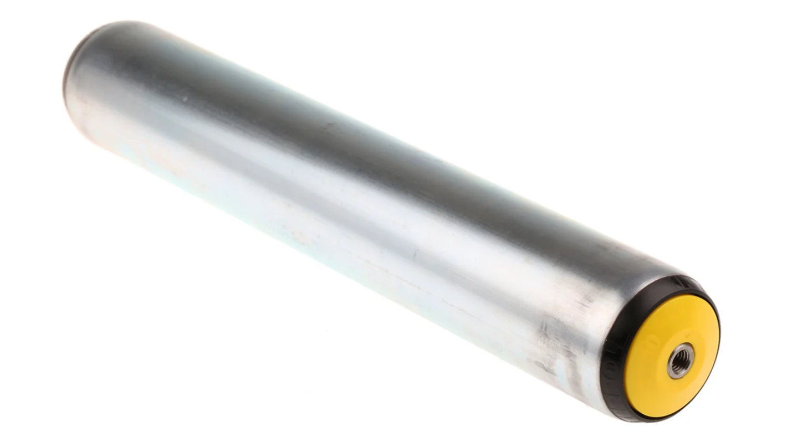
Roller
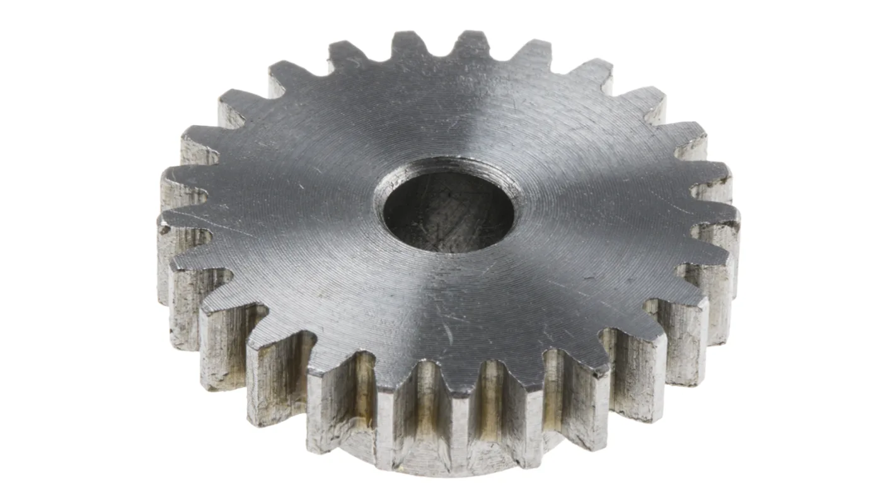
Gear

Chain

Sprocket
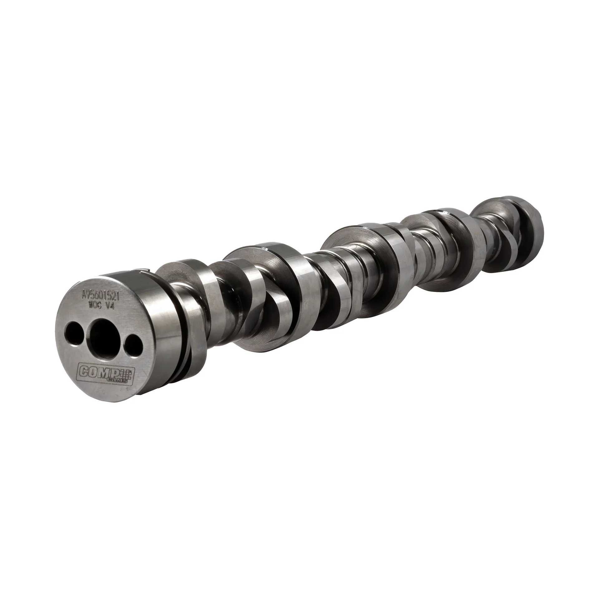
Camshaft

Guide Pin
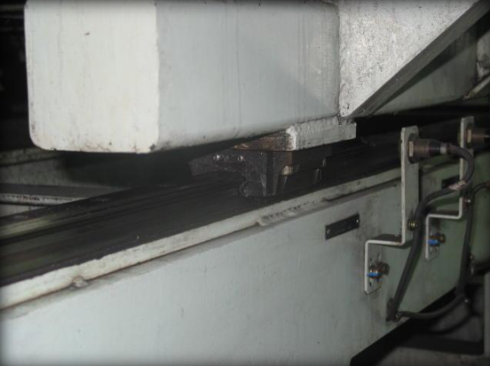
Sliding Face
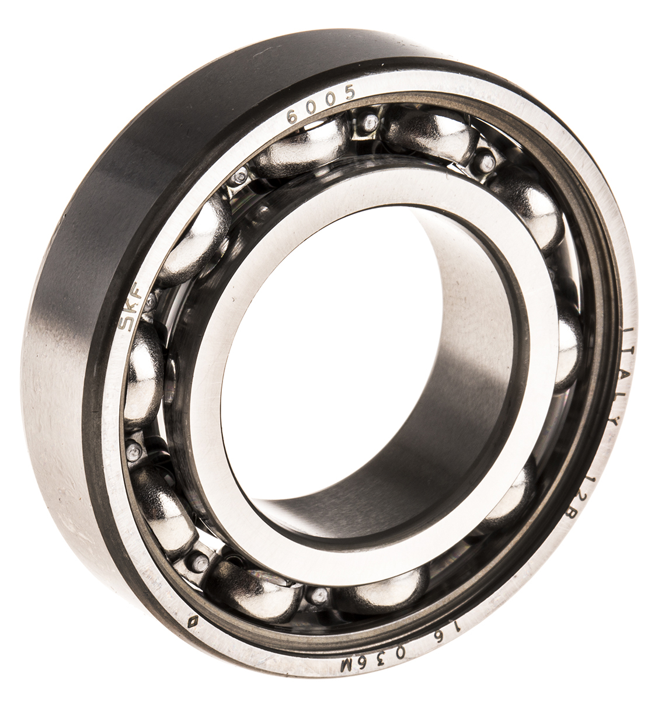
Bearing
Jenis Pelinciran
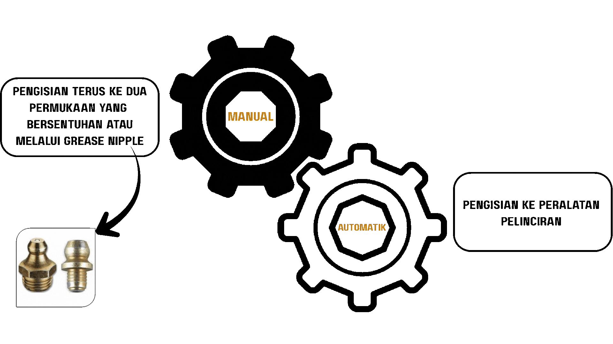
Peralatan Pelinciran
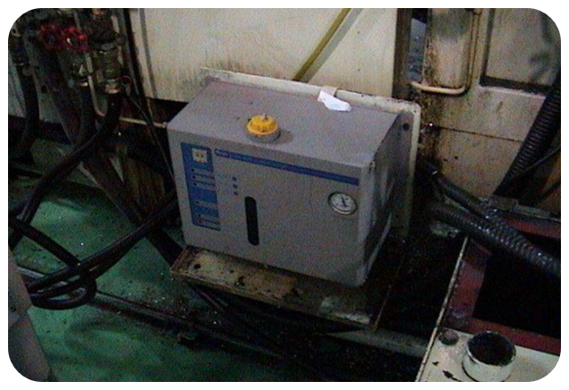
Pam Pelincir Auto
Fungsi melancarkan pergerakan komponen-komponen
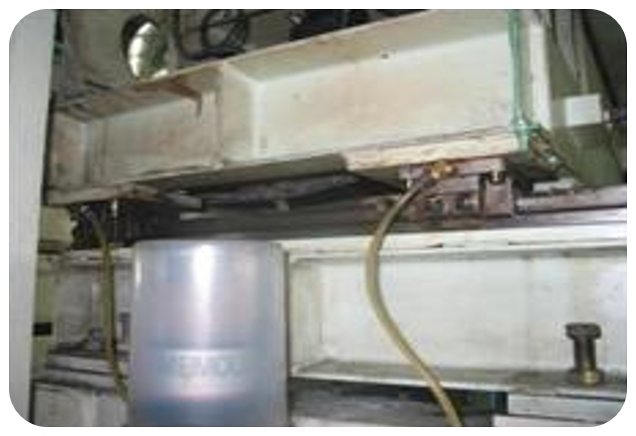
Auto Greaser
Fungsinya adalah memisahkan 2 permukaan logam yang bergeser,
menyejukkan mesin dan membersihkan mesin daripada kotoran.
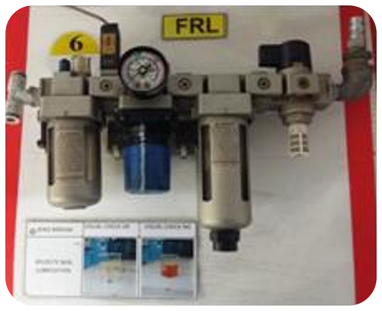
FRL
- Fungsi filter adalah sebagai penapis udara supaya komponen2 yang tidak tercemar.
- Fungsi regulator adalah untuk mengawal tekanan udara.
- Fungsi lubricator untuk memberikan pelinciran pada bahagian2 pneumatik yang bergerak.
Langkah-langkah Aktiviti Pelinciran
-
Membuat pembersihan keseluruhan kepada peralatan pelinciran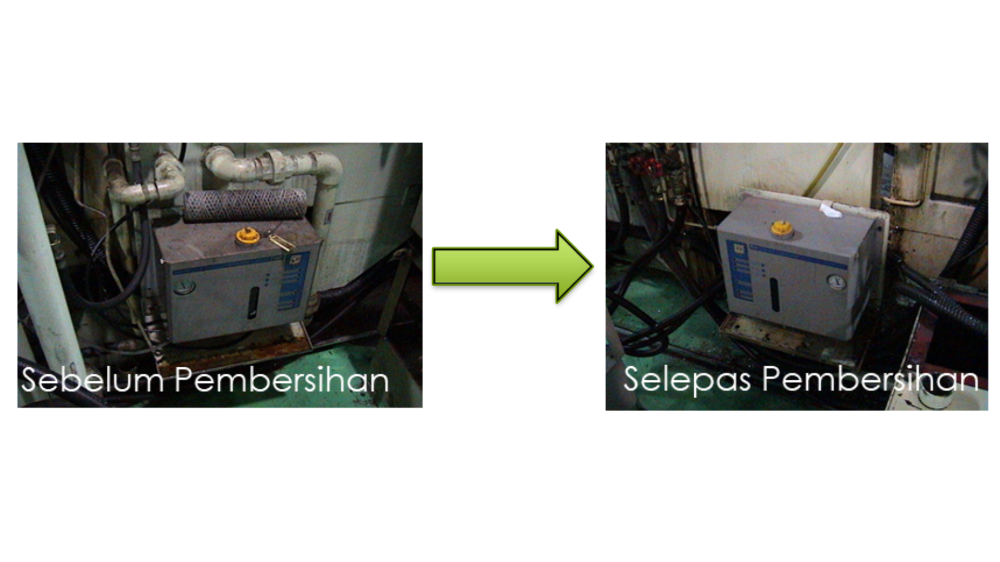
-
Melekatkan I.C label untuk tujuan pemeriksaan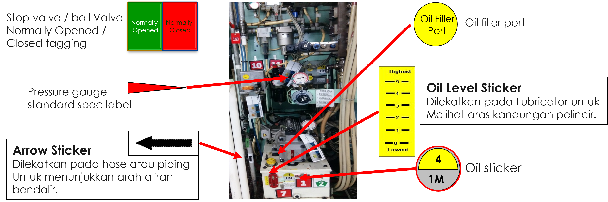
-
Melakukan pemeriksaan terhadap peralatan pelinciranPerkara yang perlu diperiksa ialah: (merujuk inspection sheet)
- Kebocoran minyak.
- Level/kuantiti minyak (pelincir) mengikut sukatan yang ditetapkan.
- Fungsi peralatan.
- Bacaan gauge (bagi peralatan yang menggunakan gauge).
-
Kemaskini TPM standard - masukkan item pemeriksaan pelinciran
- Peralatan yang hendak diperiksa.
- Cara dan standard penilaian.
- Masa melakukan pemeriksaan.
- Jangka masa (tempoh) melakukan pemeriksaan.
- Jumlah manpower yang diperlukan.
Inspection Check Sheet
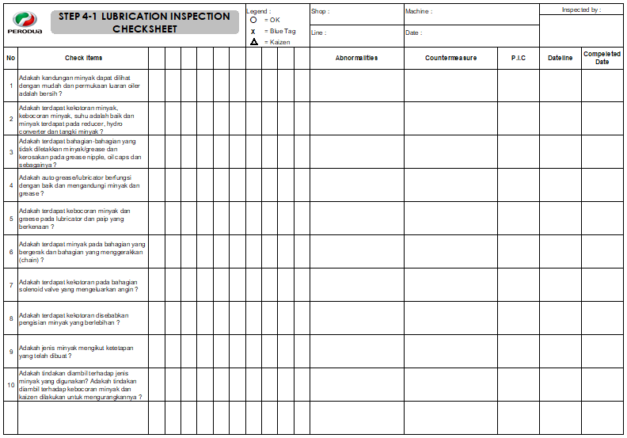
Diagnosis Check Sheet
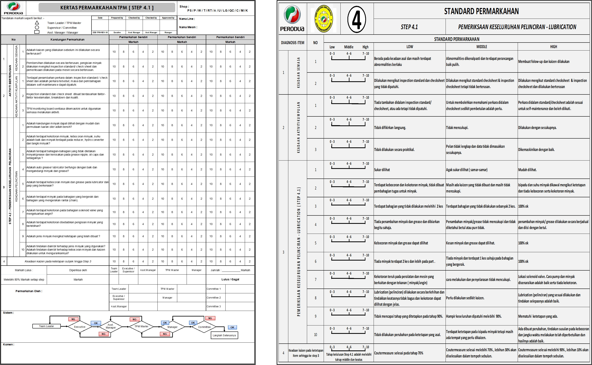